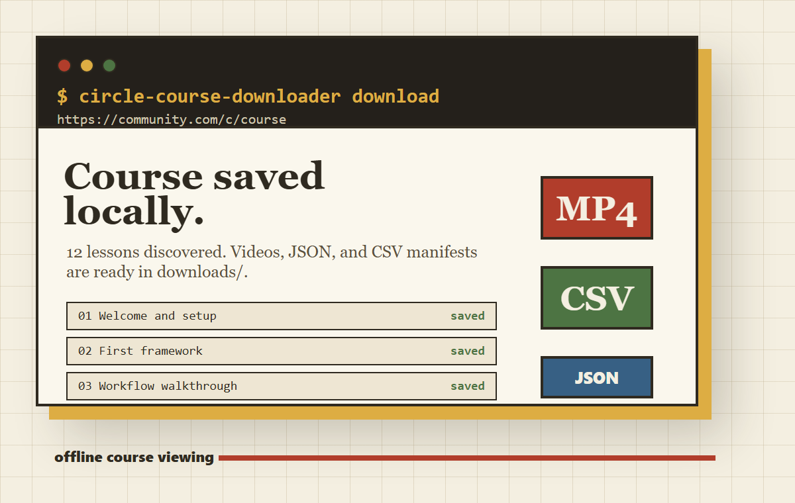

Open the course
Paste a Circle course URL into the CLI and it opens a dedicated Chromium browser.
Python CLI for Circle courses
Circle Course Downloader is a simple command-line app that opens your browser, finds course lessons, and saves the videos to your computer.

No extension. No app store. No complicated setup. Run one command, sign in through the browser, and let the downloader organize the lessons.
Paste a Circle course URL into the CLI and it opens a dedicated Chromium browser.
The tool reads the course page, visits each lesson, and detects available video streams.
Lessons are downloaded with clean filenames, plus JSON and CSV manifests for the course.
python -m pip install circle-course-downloader
python -m playwright install chromium
circle-course-downloader download "https://your-community.com/c/course"The project stays intentionally small: discover lessons, save videos, and produce useful manifests.
Use a real browser window for the first login instead of pasting credentials into a terminal.
Each run writes JSON and CSV files with lesson titles, URLs, providers, and download status.
Use dry-run mode to inspect the generated download commands before writing video files.
The code is small, MIT licensed, and published on GitHub for fixes and improvements.
Short answers for users comparing tools or trying to understand what this project does.
No. It is a command-line tool. It opens a browser only when it needs you to sign in.
By default, videos and manifests are saved in a local downloads/ folder.
It scans Circle lesson pages and saves the detected video stream for each lesson.
Yes. The GitHub repository has setup instructions, tests, and contribution notes.